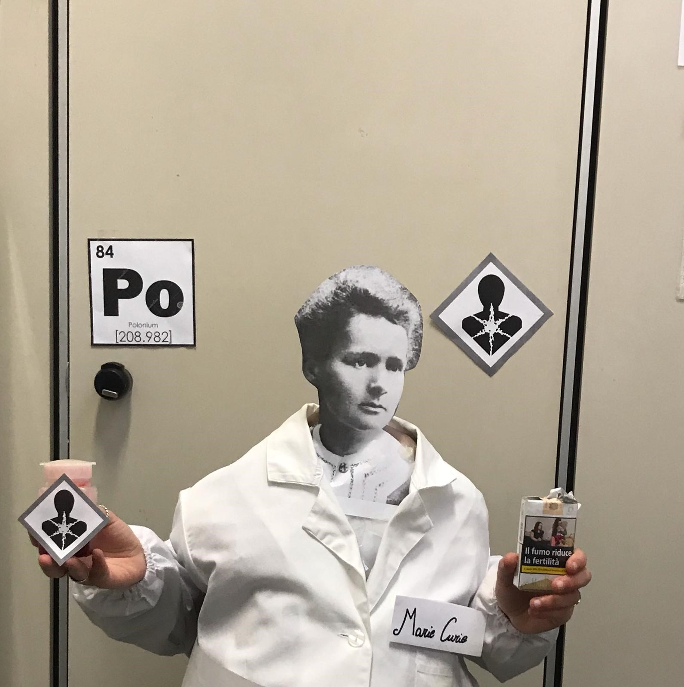

Polonio
Il polonio (Po, Z=84) è un semimetallo radioattivo, simile al tellurio e al bismuto. Scoperto nel 1898 dai coniugi Curie, che ne scelsero il nome in onore del paese di origine della scienziata
Home